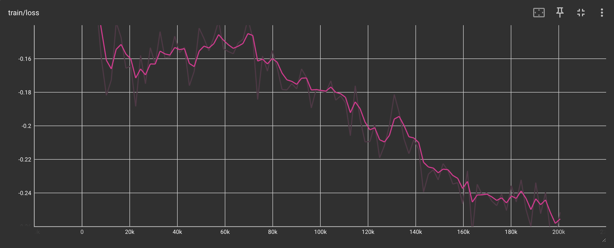
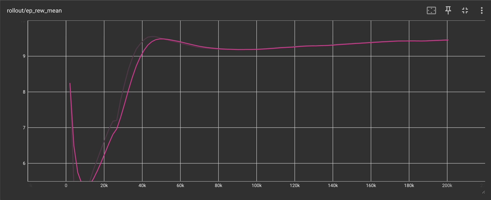
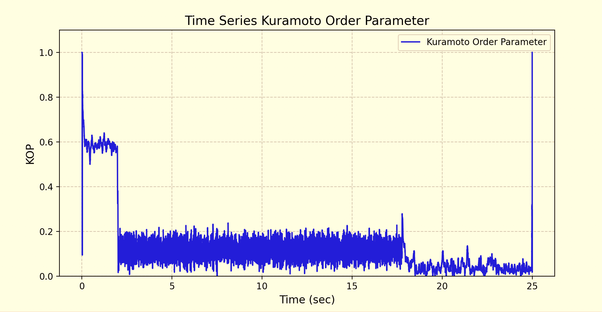
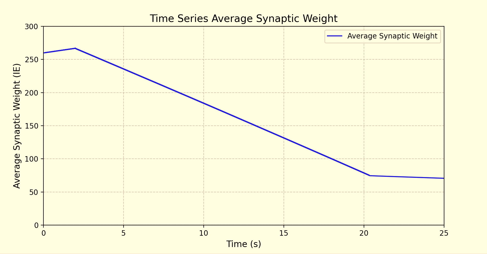
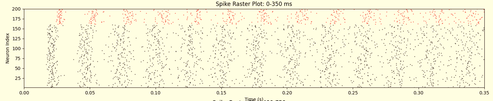
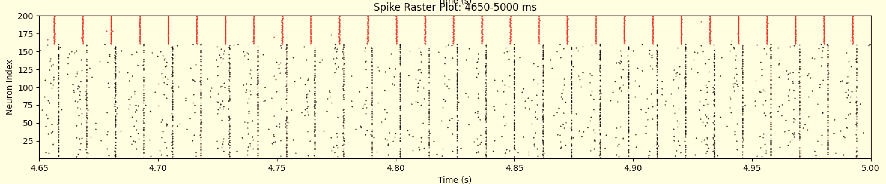

NeuroLoop¶
Overview¶

Closed-Loop Deep-Brain Stimulation for Controlling Synchronization of Spiking Neurons.

The overall architecture of this work.
Implements a closed-loop deep brain stimulation (cl-DBS) system to modulate neural synchronization in a computational model of an Excitatory-Inhibitory network of Leaky Integrate-and-Fire neurons.
Optimizes the open-loop regime described in (Schmalz & Jumar, 2019) by implementing a Reinforcement-Learning (RL) driven feedback controller that adjusts stimulation parameters based on real-time measurements of network synchronization.
Results¶
Training Loss

Episode Reward Mean

Neural Synchronization

Mean Synaptic Weight

Neuron Spike Times (pre-stim)

Neuron Spike Times (post-stim)

Successfully learns to reduce neural synchronization and forces a spiking pattern.
Warning
I have yet to figure out a better way to concisely display results.
Mermaid XYChart would be preferred if it worked better.
API¶
Environment¶
class gymnasium.Env
class dbsenv.envs.DBSEnv(gymnasium.Env)
class dbsenv.envs.FTSTSEnv(DBSEnv)
The main Gymnasium class for implementing Reinforcement Learning Agents environments.
The class encapsulates an environment with arbitrary behind-the-scenes dynamics through the step() and reset() methods.
The main API methods that users of this class need to know are:
step()- Updates an environment by taking an action and returning the agent's observation, the reward for taking that action, whether the environment has terminated or truncated, and auxiliary diagnostic information.reset()- Resets the environment to an initial state, required before the first call tostep(). Returns an initial observation and auxiliary diagnostic information.render()- Renders the environment to help visualize what the agent sees.close()- Closes the environment and frees up resources.
Methods¶
DBSEnv.init¶
DBSEnv(
sim_config: SimConfig,
model_class: type[NeuralModel],
model_params: dict | None = None,
render_mode: str | None = None
)
PARAMETERS:
sim_config– Simulation configuration (timing, sampling, resolution)model_class– Neural model class implementing the spiking dynamicsmodel_params– Optional model-specific keyword argumentsrender_mode– Optional Gymnasium render mode
DBSEnv.reset¶
DBSEnv.reset(
seed: Optional[int] = None,
options: Optional[dict] = None
) -> tuple[ObsType, dict[str, Any]]:
Resets the environment to an initial state (reinitializing plasticity, stimulation timing, internal counters, etc.), returning an initial observation and info.
PARAMETERS:
seed (optional int)– The seed that is used to initialize the environment's PRNG (np_random) and the read-only attribute np_random_seed.options (optional dict)– Additional information to specify how the environment is reset.
RETURNS:
observation (ObsType)– Observation of the initial state.info (dict)– Auxiliary diagnostic information complementing the observation.
DBSEnv.step¶
Runs one timestep of the environment's dynamics using the agent's actions.
PARAMETERS:
action (ActType)– an action provided by the agent to update the environment state.
RETURNS:
observation (ObsType)– Population-level neural statisticsreward (SupportsFloat)– The reward as a result of taking the action, encouraging (de)synchronizationterminated– Episode termination flagtruncated– Truncation flag (unused)info– Diagnostic data (e.g., spike timing)
Attributes¶
DBSEnv.action_space¶
The actions are continuous and normalized internally before being mapped to biophysically meaningful stimulation parameters.
| Num | Action | Unit | Min | Max |
|---|---|---|---|---|
| 0 | Stimulation Amplitude | mV | 10 | 200 |
| 1 | Stimulation Frequency | Hz | 5 | 180 |
| 2 | Pulse Width | μs | 50 | 500 |
DBSEnv.observation_space¶
Observations are aggregated over a fixed temporal window and normalized to ensure stable learning dynamics across stimulation regimes.
| Num | Observation | Population | Unit | Min | Max |
|---|---|---|---|---|---|
| 0 | Synchrony (Order Parameter) | Global | unitless | 0.0 | 1.0 |
| 1 | Mean Excitatory Membrane Voltage | E | mV | -80 | 50 |
| 2 | Std. Excitatory Membrane Voltage | E | mV | 0.0 | 30 |
| 3 | Mean Inhibitory Membrane Voltage | I | mV | -80 | 50 |
| 4 | Std. Inhibitory Membrane Voltage | I | mV | 0.0 | 30 |
| 5 | Mean I→E Synaptic Weight | I→E | unitless | 0.0 | 1.0 |